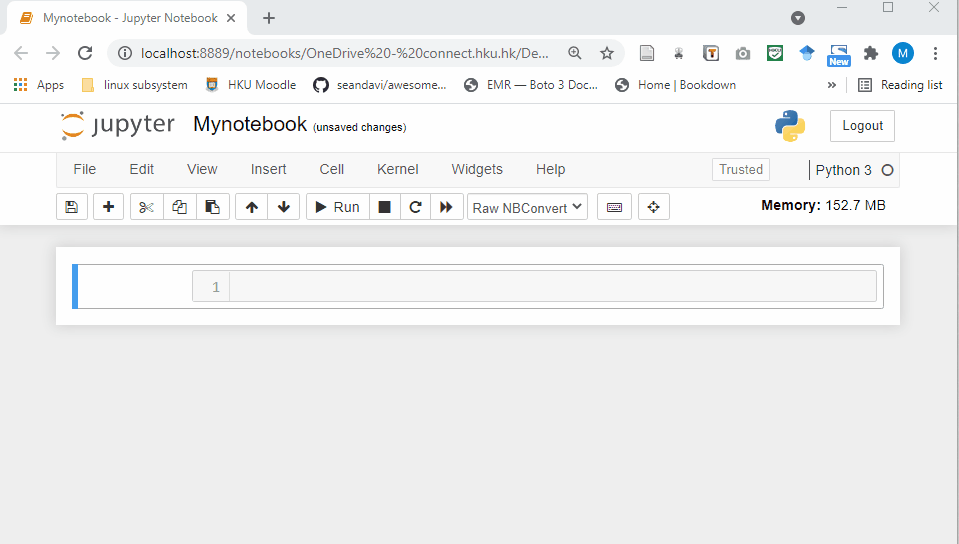
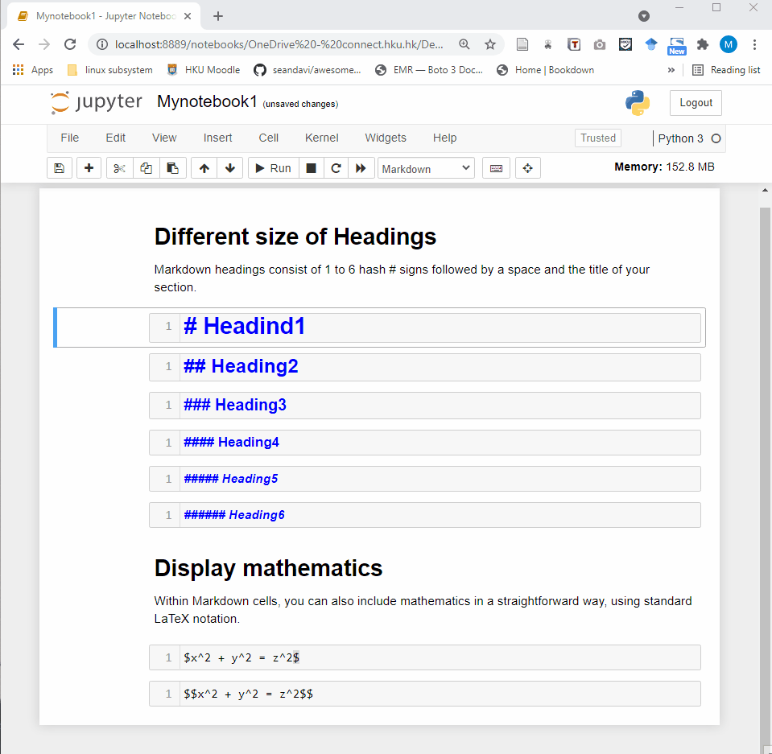
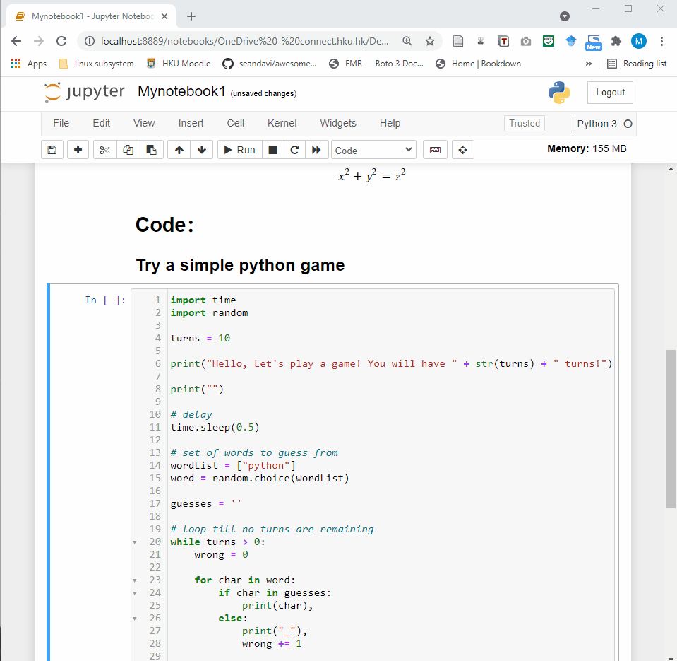

Chapter 3 Jupyter Notebook Overview
3.1 Interface
Jupyter Notebook provides a very simple and user-friendly interface, including Menu bar, Toolbar and Cell. A notebook consists of a sequence of cells. There are three types of cells in Jupyter Notebook. 
Raw Cell: Raw cells provide a place where you can write anything that you don’t want to be executed by the notebook.
Markdown Cell: Markdown cells can be executed and provides documentations for your notebook.

- Code cell: A code cell allows you to edit and write new code. When executed, the code is sent to the kernel associated with the notebook. The execution results are returned and displayed in the notebook as the cell’s output.

3.2 Shortcuts
Shift + Enterrun the current cell, select belowCtrl + Enterrun selected cellsAlt + Enterrun the current cell, insert belowCtrl + Ssave and checkpoint
command mode (press Esc to activate):
Entertake you into edit modeHshow all shortcutsUpselect cell aboveDownselect cell belowShift + Upextend selected cells aboveShift + Downextend selected cells belowAinsert cell aboveBinsert cell belowXcut selected cellsCcopy selected cellsVpaste cells belowShift + Vpaste cells aboveD,DDdelete selected cellsZundo cell deletionSSave and CheckpointYchange the cell type to CodeMchange the cell type to MarkdownPopen the command palette.
You can check the keyboard shortcuts by：
Help –> Keyboard Shortcuts